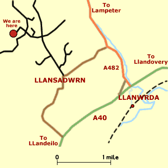

Local Area
During the day, visit some of the local attractions - Carreg Cennen castle, Aberglasney Gardens, the National Botanic Gardens of Wales, Dinefwr Park - or take advantage of local walking and cycling paths. Alternatively, walk to the ancient church at Llansadwrn or explore the farm and woodlands. On a wet day, swimming is accessible locally. Our excellent landlord Cliff at the Sexton Arms will provide you with evening entertainment in the form of pool, darts, occasional quizzes, as well as dinner and fine Welsh ale.
Our local shopping centers are Llandeilo (8 miles) and Llandovery (6 miles) which offer a range of arts and crafts shops, cafés, restaurants and a rich history. Meanwhile, Carmarthen (20 miles), the famed birth town of Merlin, provides a market, cinema, and a selection of big-brand shops. It is close to the beach and local attractions such as Dylan Thomas' boathouse in Laugharne. Within reach for a day trip, Swansea Bay, Mumbles and the Gower, made fashionable by Lloyd George, offers a chance to discover the UK's first designated area of outstanding natural beauty.
Local Map & directions
From London / South East
Follow the M4 West over the Severn bridge into Wales. At junction 32 head North on the A470 signposted Brecon. Just outside Brecon take the A40 heading West and follow through Llandovery in the direction of Llandeilo to Llanwrda. See map and local directions below.
From the South West
Head North East on the M5. At Junction 18A take the M49 to link up with the M4. Head West until junction 32, then take A470 North. Just outside Brecon take the A40 heading West and follow through Llandovery in the direction of Llandeilo to Llanwrda. See map and local directions below.
From the North / Midlands
Take the M5 South to junction 8. Join the M50 and follow to its end. Pick up A40 (heading West) and follow through Monmouth, Abergavenny, Brecon and Llandovery to Llanwrda. See map and local directions below.
From Llanwrda
At Llanwrda turn right on the A482. After 1 mile turn left signposted to Llansadwrn. At the top of the hill turn right signposted to Carmel. Follow road less than 1 mile (going round 90° left bend) until crossroads. Go straight over down narrow lane over bridge, turn left down track and into our yard.